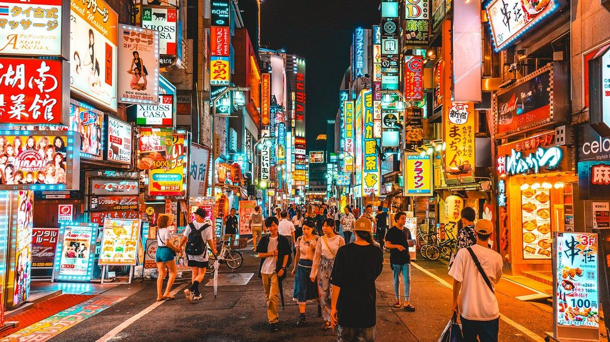
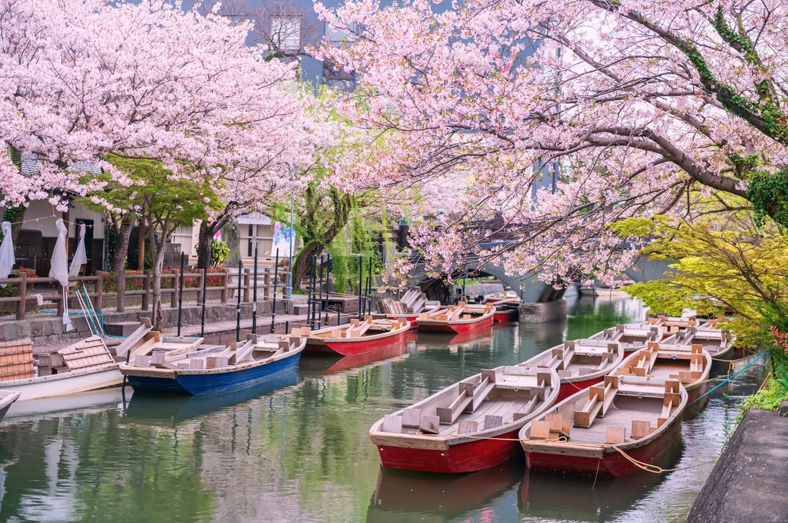
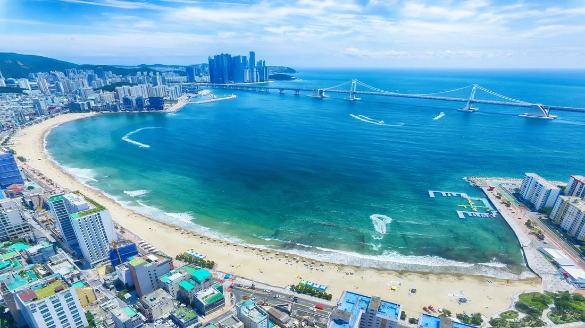

⚙ Rachael — one-time setup to turn on the live shared board: follow Shared_Board_Setup.md (in this folder) to create a free Google Sheet + script, then paste your web-app link into the API_URL line near the bottom of this file. Until then, voting & comments are switched off.
Japan
🕓 Last updated 11 June 2026 · 8:49 PM MDT
Autumn 2026 · Japan + Korea
Where We're Staying
A 3-night-per-city journey · Tokyo → Kyoto → Fukuoka → Busan → Seoul
South Korea
🗓 Oct 16 – Nov 3, 2026👥 Eric · Rachael · Joan🛏 Comfortable beds · easy access💴 ≤ $500/room (splurge if extraordinary)
How to use this page: it's for the three of us to weigh the options and decide together. First, tap your name in the bar above so we know who's posting. Then for each city: review the recommended pick and the comparison table, tap your preferred place to vote, and add comments in the thread. Everyone sees the same live votes and conversation — it updates for all of us.
The three of us
Eric & Rachael and Joan (Rachael's mum) — traveling together, meeting Eric in Tokyo.
Two birthdays to celebrate along the way: Rachael's on Oct 18 in Tokyo, and Joan's on Oct 29 in Busan.
First trip for Joan — everywhere's new, so we'll be sure to hit the icons. Rachael has been to Japan before, and Eric knows both Japan & Korea, so he can point us to favorites (and a few off-the-beaten-path finds).
What we're after
Luxurious but boutique — quiet, characterful, walkable to sights; historic neighborhoods over party areas. No big Western chains.
Two rooms (or a place that sleeps three with separate bedrooms) so we each have our own space, comfortable Western beds, and easy, lift / step-free access where we can get it — nicer for everyone after long days out.
≤ $500/room/night — unless a place is a genuine heritage experience (our "Ancient Hue Garden House" benchmark).
Traveling carry-on only, so a stay with in-unit laundry (or easy send-out) at least once mid-trip is a real plus — the apartment options below cover it.
The Route
Oct 16 · eve
Fly Denver → Tokyo ✈️
3 nights
Oct 18 – 21
Tokyo
Arrive, meet Eric · 🎂 Rachael's birthday on the 18th
Oct 21
Shinkansen → Kyoto 🚄
3 nights
Oct 21 – 24
Kyoto
Day trip to Dotonbori, Osaka
Oct 24
Shinkansen → Fukuoka 🚄
3 nights
Oct 24 – 27
Fukuoka
Possible onsen side-trip to Yufuin
Oct 27
Ferry / flight → Busan ⛴
3 nights
Oct 27 – 30
Busan
Haeundae Beach · 🎂 Joan's birthday on the 29th
Oct 30
KTX → Seoul 🚄
3 nights
Oct 30 – Nov 2
Seoul
Palaces & hanok quarters
Nov 2 – 3
Fly Incheon → Denver · home ✈️
Getting There — Flights
Prioritizing United & Star Alliance (points-friendly), business class where it's affordable. Business award seats are limited, so worth booking early — and confirm live schedules & fares before ticketing.
United live fares — actual, per personPulled from United for these exact dates. A round-trip is the two one-way legs combined. Fares move daily and Polaris (lie-flat) award seats are limited — book early.
Leg
United Economy Main cabin
Premium Plus Roomier seat
Polaris Lie-flat business
DEN → Tokyo (NRT) Oct 16 · nonstop UA143 · 12 h 20 m · 11:25a→2:45p +1
$1,421
$3,352
$9,075
Seoul (ICN) → DEN Nov 2 · 1 stop via SFO · 15 h 45 m · 12:45p→12:30p
$2,677
$3,352
$5,657
Round-trip total per person, both legs on United
$4,098
$6,704
$14,732
Premium Plus is the sweet spot on the long Denver leg — roughly a third of Polaris's price for a markedly better seat. Polaris is far better value on the return ($5,657 vs $9,075 outbound). 🎟 In miles, transpacific business runs ~88k–120k each way + taxes.
Rachael & Joan · Denver → Tokyo
Arriving Tokyo for Oct 18.
✈️ Shortest — nonstop (✓ confirmed available): United DEN → Tokyo Narita (UA143, Boeing 787, Polaris) — 12 h 20 m, departs ~11:25 AM, arrives the next afternoon; the only nonstop, beating any layover by 3+ hours. Actual Oct 16 fares: $1,421 economy · $3,352 Premium Plus · $9,075 Polaris (see fare table above). It leaves late morning and lands next-day, so to land on Oct 18, fly out Oct 17.
🔁 If that's full: United 1-stop via San Francisco / LA / Chicago to Haneda or Narita — adds ~3–5 h but more departure times and Polaris award space.
✈️ Shortest — nonstop (no layover): Several daily nonstops Taipei → Tokyo Haneda, ~3 h 15 m (budget fares from ~$150). For Star Alliance business, EVA Air (Royal Laurel) or ANA fly TPE → Haneda/Narita.
🎟 Points: bookable with United MileagePlus or EVA Infinity miles. Aim the arrival close to the Denver flight so everyone meets up.
✈️ Shortest — a layover is required (no nonstop):Air Canada (Star Alliance) via Vancouver — ICN → YVR → DEN, 14 h 23 m total with just a ~1 h 45 m layover (you pre-clear US customs in Vancouver), from ~$771. Departs 6:55 PM, arrives Denver 5:18 PM the same day.
🔁 All-United option: United via San Francisco — ICN → SFO → DEN, 15 h 45 m (~2 h layover) — actual Nov 2 fares: $2,677 economy · $3,352 Premium Plus · $5,657 Polaris (lie-flat the whole way).
🎟 Points & business: redeem through United MileagePlus (own metal) or Aeroplan / ANA for partner space; transpacific business one-way typically runs ~88k–120k miles + taxes. Note: Asiana's Star Alliance partnership winds down with its Korean Air merger on Dec 17, 2026 — after this trip, so November redemptions are fine.
Stay Considerations — compare & choose, one per city

Tokyo
Oct 18 – 21 · 3 nights · 🎂 Rachael's birthday⛅ Typically 56–70°F, mild autumn days
Recommended
Hotel Chinzanso
Western bedsElevator~$415/rm · 9.4★
The rare pick that's both the heritage splurge wish and within budget: a 700-year-old, 17-acre garden estate — pagoda, maples, hot-spring baths — in the spirit of the Hue garden house, but the live quote came back at ~$415/room, with comfortable beds, a lift to every floor, and a 9.4/10 score. Bookable online today.
🎂 Rachael's birthday is the day we arrive. Chinzanso's gardens make a lovely backdrop for a celebratory first-night dinner to kick off the trip.
Property
Pros
Cons
Price/night
Rating
Hotel Chinzanso★ Pick✨ SplurgeHistoric garden hotel · Bunkyo — Mejiro garden district
Janu Tokyo✨ New 2024Brand-new modern luxury · Azabudai Hills
Aman's 2024 sibling — spacious rooms and a vast four-floor spa; set in Azabudai Hills with teamLab Borderless, designer shops & dining right downstairs
Oct 21 – 24 · 3 nights⛅ Typically 52–68°F, crisp mornings, early foliage
Recommended
Hotel Kanra Kyoto
Western bedsElevator~$190–460 · 9.3★
The legendary ryokan tempt hardest here — but the most revered ones use floor futons and have steeper, older staircases, less ideal after long days out. Hotel Kanra keeps the traditional machiya character (hinoki-wood tubs, restored-townhouse design) while pairing it with proper beds, a lift, and a central, walkable location — the best all-round fit, and superior rooms sleep three.
Property
Pros
Cons
Price/night
Rating
Hotel Kanra Kyoto★ PickMachiya boutique · Shimogyo — central
Kanra for comfort, or chase the Hiiragiya ryokan dream? Tell us.

Fukuoka
Oct 24 – 27 · 3 nights⛅ Typically 57–70°F, mild Kyushu weather
Recommended
Agora Fukuoka Hilltop
Western bedsQuiet hilltop~$120–200 · 8.3★
For our three nights in the city, Agora Hilltop is the sweet spot: a quiet hilltop design hotel with a spa and public bath, comfortable beds, peaceful, and excellent value. The big decision here is whether to fold in a special onsen side-trip to Sanso Murata in Yufuin (extraordinary, but ~90 min away and an overnight detour).
🧺 Mid-trip laundry stop. Fukuoka sits right at the half-way mark — the ideal place to reset for carry-on travel. The Tenjin TUMUGU apartment has an in-unit washer; coin laundromats are easy to find nearby; and most hotels (Agora included) offer same-day laundry service. Busan's Ciel de Mer also has a washer/dryer if we'd rather wash a couple of days later.
Property
Pros
Cons
Price/night
Rating
Agora Fukuoka Hilltop★ PickDesign hotel & spa · Chuo — hilltop
Quiet hilltop, spa & public bath, beds, great value, short ride to Tenjin
Not walkable to nightlife; solid (not stellar) score
Stay put at Agora, or carve out a night at the Yufuin onsen?

Busan
Oct 27 – 30 · 3 nights · 🎂 Joan's birthday🌤 Typically 52–66°F, breezy by the coast
Recommended
JB Design Hotel Haeundae
Western bedsHigh floor for quiet~$100–200 · 8.3★
Busan's best options cluster at Haeundae Beach, so this leg leans seaside. JB Design Hotel is the boutique choice — individually decorated rooms with soaking tubs, comfortable beds, and two rooms so we each have our own space. Ask for a high floor to stay above road noise. The ocean-view apartments are unbeatable value if we're happy self-catering.
🎂 Joan's birthday lands here. Worth a toast — an ocean-view room and a special seafood dinner on Haeundae, or splurge on a villa at Ananti at Busan Cove (below) to make the occasion really memorable.
Property
Pros
Cons
Price/night
Rating
JB Design Hotel Haeundae★ PickDesign boutique · Haeundae Beach
By the beach, soaking tubs, individually styled, two rooms = own space
Boutique hotel, or a big ocean-view apartment? And ideas for the birthday night.
Seoul
Oct 30 – Nov 2 · 3 nights🍂 Typically 43–59°F, cooler — pack a warm layer
Recommended · pending reply
Rakkojae (Bukchon)
Floor beddingHilly lanes~$400–800
The closest match in the whole trip to the Hue garden house: a 130-year-old hanok restored by a master carpenter, five rooms around a courtyard, the first hanok in the Michelin Seoul guide. The trade-offs are traditional ondol floor bedding and Bukchon's hilly, stepped lanes — our enquiry email asks whether a bed can be arranged and which room has the easiest approach. If those come back well, it's a memorable way to end the trip; if not, flatter, quieter Seochon has lovely hanok stays.
Property
Pros
Cons
Price/night
Rating
Rakkojae (Bukchon)★ Pick✨ SplurgeHeritage hanok · Bukchon Hanok Village
130-yr master-carpenter hanok, Michelin-listed, courtyard garden, by the palaces
Ondol floor bedding (ask re bed); hilly/stepped lanes; $$$; books direct
Hold out for the Rakkojae hanok, or go for a comfy Seochon stay?
Things to Do — Art, Shopping & Food
A note on food — so everyone eats well
Three different eaters, easy to please together. Eric — adventurous, loves seafood, will try almost anything (skips pork). Rachael — keeps it simple, just good sustenance; no pork and nothing too fishy. Joan — no red meat, otherwise easy. So chicken, seafood, noodles, tempura and mild dishes keep everyone happy, while Eric chases the bolder local specialties — with the pork/BBQ items flagged below.
A note on art & shopping
We're art people across the board and love bringing pieces home — so the picks below favor galleries you can actually collect from, artisan studios, and one-of-a-kind, place-specific makers over generic souvenirs. Joan has an eye for interesting designers and unique clothing. We'll happily splurge on something truly singular that can only be bought there — and skip the cheap stuff. (Not gamers, though Eric enjoys pop-culture finds.)
Tokyo
🎨 Installation art: teamLab Borderless (Azabudai Hills) and teamLab Planets (Toyosu) — the two big immersive-art worlds. Book timed tickets well ahead (~¥3,800 each, allow 2–3 hrs); they sell out. Also the Mori Art Museum in Roppongi.
🏛 Museums & galleries: Tokyo National Museum in Ueno (Japan's oldest & largest — a great first-timer overview for Joan), the serene Nezu Museum (art + garden in Aoyama), and the Ghibli Museum in Mitaka (book well ahead).
🛍 Shopping: For Joan's designer eye — Aoyama & Omotesandō (Comme des Garçons, Issey Miyake) and Dover Street Market Ginza; for art, the Tennoz/Terrada and Roppongi contemporary galleries and the Ōedo Antique Market; plus Nakano Broadway for Eric's vintage pop-culture finds. The one-of-a-kind, not the souvenir stalls.
🍜 Food: Something for everyone — Eric in sushi & sashimi heaven; Rachael happy with tempura, chicken katsu, yakitori or a mild shio/chicken ramen; Joan with chicken & seafood (skip the wagyu/beef spots).
🐾 Cats, animals & shows:Cat Café Mocha (stylish, several branches), Akiba Fukurou owl café (book ahead, calm), a hedgehog or Mame-Shiba café in Harajuku, and the capybara café near Kichijōji (café entry ~¥600–2,000 incl. a drink, 30–60 min). For a show, kabuki at the Kabukiza in Ginza — single-act "hitomaku" tickets from ~¥1,000, ~1–1.5 hrs (schedule). Art to buy: ukiyo-e woodblock prints at Mokuhankan (Asakusa) or Ohya Shobō (Jimbōchō).
🍰 Sweets: matcha parfaits in Ueno, century-old Kameju dorayaki (Asakusa), nerikiri wagashi, and Ginza's famous fruit parfaits (Takano). Most ¥800–2,000.
Kyoto + Osaka day trip
🎨 Installation art: On the Osaka day, teamLab Botanical Garden Osaka — a real night garden turned into living art (pairs beautifully with Dotonbori after dark). In Kyoto: lantern-lit Gion lanes and the Kyotographie photo galleries.
🏛 Museums & galleries: Kyoto National Museum (Higashiyama), the contemporary Kyoto City KYOCERA Museum of Art with its strong rotating shows, and the National Museum of Modern Art, Kyoto (MoMAK) — excellent on modern painting & crafts.
🛍 Shopping: Artisan pieces you can only get here — handmade ceramics, indigo & Nishijin textiles, a Kyoto kitchen knife, washi paper, and SOU·SOU's original designs; browse the Sanjō/Teramachi galleries and antique shops for collectible art and one-off vintage kimono.
🍜 Food: Kyoto's yudofu (tofu) & obanzai. On the Osaka day, Eric can dive into takoyaki, kushikatsu & street seafood while Rachael keeps it simple with udon, gyoza or chicken katsu (skip pork). Kyoto's dashi can taste fishy — easy to steer Rachael around.
🎭 Don't-miss (Oct 22!): a rare double — Jidai Matsuri, the grand "Festival of the Ages" costume parade by day, and the Kurama Fire Festival (flaming-torch night procession). Jidai Matsuri is the relaxed one; Kurama is spectacular but very crowded with tricky late trains. Both are free & public — the Jidai parade runs ~12:00–14:30 (Imperial Palace → Heian Shrine), Kurama torches from ~18:00. 🐾 Cat cafés dot the city; buy woodblock prints & crafts at the Kyoto Handicraft Center.
🍰 Sweets: warabi-mochi, matcha parfaits & seasonal wagashi in Higashiyama; tea-and-sweets sets at old tea houses near Nishiki. A wagashi-making class is a fun option.
Fukuoka
🎨 Installation art:teamLab Forest Fukuoka at BOSS E·ZO, beside the PayPay Dome — an interactive digital forest.
🏛 Museums & galleries:Kyushu National Museum in Dazaifu (pairs with the shrine — Japan's grand history museum), the Fukuoka Asian Art Museum (contemporary Asian art at Nakasu-Kawabata), and the Fukuoka Art Museum in Ōhori Park.
🛍 Shopping: The Daimyō district for independent designers, plus genuine local craft from the makers themselves — hand-woven Hakata-ori silk and hand-painted Hakata dolls; worth gallery-hopping for collectible pieces too.
🍜 Food: A real food city — Eric should hit the Nakasu yatai (street stalls), fresh seafood & mentaiko. Heads-up: the famous Hakata ramen is pork (tonkotsu); easy crowd-pleasers are mizutaki (chicken hot-pot), seafood and Hakata udon. (Joan: skip motsunabe — it's offal/beef.)
🐾 Animals & art: cat cafés around Tenjin; lovely art buys in Hakata-ori weaving & hand-painted Hakata dolls. (FYI the Grand Sumo Kyushu Bashō fills Fukuoka in mid-November — just after your dates.)
🍰 Sweets: amaou-strawberry desserts, Tenjin café parfaits, and famous Hakata pastries — easy to grab at the Hakata Station depachika.
Busan
🎨 Installation art:Arte Museum Busan in Yeongdo — the largest of the Arte Museums, with immersive media-art rooms (the "Starry Busan" finale); plus Museum 1.
🏛 Museums & galleries: Busan Museum of Art with Space Lee Ufan, MOCA Busan on Eulsukdo Island (nature & eco themes), and F1963 — a former wire factory turned art complex with Kukje Gallery, a bookstore and café.
🛍 Shopping: Independent designers around Jeonpo, and F1963 — a former factory turned arts complex with Kukje Gallery, an art bookstore and makers' studios where you can actually collect a piece. Quality over tourist-market quantity.
🍜 Food: A seafood city — Eric will love Jagalchi fish market & raw-fish (hoe). Rachael & Joan stick to dak-galbi & samgyetang (chicken), bibimbap or Korean fried chicken (no red meat). Birthday dinner idea: a Haeundae chicken hot-pot or an ocean-view seafood table.
🐾 Animals: cat cafés around Seomyeon & Nampo, and SEA LIFE Busan Aquarium on Haeundae Beach for the sea creatures (~₩30,000, ~1.5 hrs).
🍰 Sweets: Korean bingsu (shaved-ice with red bean & fruit) at Sulbing, plus dessert cafés around Jeonpo Café Street & Gwangalli. ~₩8,000–15,000.
Seoul
🎨 Installation art:teamLab: LIFE at the DDP (Dongdaemun Design Plaza — Zaha Hadid's landmark building).
🏛 Museums & galleries: The Leeum Museum of Art (Samsung — traditional + contemporary in landmark architecture), MMCA Seoul (national modern & contemporary), the calm Amorepacific Museum of Art, and the vast National Museum of Korea (a wonderful first-visit overview for Joan).
🛍 Shopping: Korea's gallery heart — Samcheong-dong & Insadong galleries and Kukje Gallery for collectible Korean art, hanji paper and ceramics; designer fashion in Seongsu-dong, Garosu-gil and the Hannam boutiques (great for Joan). One-of-a-kind over fast fashion.
🍜 Food: Eric can graze adventurous bites at Gwangjang Market (even live octopus) & plenty of seafood; for Rachael & Joan, jjimdak & dak-galbi (chicken), samgyetang, bibimbap, japchae and Korean fried chicken — skipping the pork/beef BBQ. The bindaetteok (mung-bean pancake) is a great shared bite.
🐾 Cats, animals & shows: a must for animal lovers — Meerkat Friends in Hongdae (meerkats, raccoons, a fox & kangaroo) and Thanks Nature Café (resident sheep!), plus cat & raccoon cafés (entry ~₩10,000–15,000 incl. a drink, ~1 hr). For a show, the long-running NANTA non-verbal comedy — ~₩40,000–60,000, ~90 min (tickets). Art to buy: Insadong's galleries & print shops.
🍰 Sweets: bingsu at Sulbing, traditional treats in Insadong (hotteok, yakgwa, dragon-beard candy), and the trendy dessert cafés of Seongsu-dong. ~₩8,000–15,000.
💆 Beauty & spa: Seoul is the home of K-beauty, so it's the place to treat yourselves. For a serene luxury facial: Sulwhasoo Spa (Gangnam, ginseng-based ritual) or The Whoo Spa (Myeongdong, royal herbal treatment) — ~₩200,000–400,000, 60–90 min. SPA 1899 pairs a red-ginseng facial with tea service. For a results-driven "glass skin" facial with LED/ultrasound, English-friendly clinics like DayBeau or Individuel Genève (book ahead). And for the classic Korean jjimjilbang — soaking pools and saunas, deeply relaxing and a bargain — Dragon Hill Spa in Yongsan (8 floors, ~₩15,000 entry, open 24 h) is the easy, welcoming pick for all three.
Suggested Itinerary
A broad Morning · Afternoon · Evening rhythm per city, clustered by area so you're not crisscrossing — plus how to get around. Mix & match across your 3 nights.
Tokyo
🌅 Morning — Old Tokyo (east): Sensō-ji & Nakamise in Asakusa, then Ueno's Tokyo National Museum & Ameyoko market; wagashi/parfait stops en route.
☀️ Afternoon — Design & shopping: Aoyama/Omotesandō boutiques + the serene Nezu Museum; or a timed teamLab slot (Planets, Toyosu / Borderless, Azabudai).
🌆 Evening — Ginza: a single act of kabuki at the Kabukiza, then dinner. (If you did Borderless, pair it with Roppongi's Mori Art Museum & city views.)
🚇 Getting around: JR Yamanote loop + Tokyo Metro — grab a Suica/Pasmo. Do the east one day, central/west another.
☀️ Afternoon — Central: Nishiki Market + Teramachi crafts & ceramics; or the KYOCERA / MoMAK museums in Okazaki. Pause for wagashi & matcha at Toraya Karyō — Toraya's serene tea house with a garden, by the Imperial Palace.
🌆 Evening: a Gion stroll + kaiseki or yudofu dinner.
🎌 Oct 22 special: midday Jidai Matsuri (Imperial Palace → Heian Shrine, by the Okazaki museums); evening Kurama Fire Festival (or an easy night if you skip the crowds).
🚌 Getting around: buses + subway; Higashiyama is very walkable and taxis are easy. Osaka day = train to teamLab Botanical Garden + Dōtonbori at night.
Fukuoka
🌅 Morning — Dazaifu: Tenmangū shrine + the Kyushu National Museum (~40 min by train).
☀️ Afternoon — City: Tenjin/Daimyō shopping + Ōhori Park art museum, or teamLab Forest by the PayPay Dome.
🌆 Evening: Nakasu yatai street-food stalls + Hakata sweets.
🚇 Getting around: subway + bus; Dazaifu by Nishitetsu train. (The Itoshima coast is a relaxed half-day west.)
Busan
🌅 Morning — Haeundae: the beach + SEA LIFE aquarium.
☀️ Afternoon — Art & cafés: Arte Museum (Yeongdo) or F1963, then Gwangalli for bingsu & sea views.
☀️ Afternoon — Art & shopping: Leeum or MMCA, then Seongsu-dong / Garosu-gil boutiques, animal cafés & dessert spots.
🌆 Evening — East: Gwangjang Market street food + DDP (teamLab: LIFE) and Dongdaemun night shopping.
🚇 Getting around: the subway is superb (T-money card). Cluster north (palaces), east (DDP/markets), west (Hongdae/Seongsu).
Booking Status
Bookable now
✓ Chinzanso — Tokyo (online)
✓ Hotel Kanra — Kyoto
✓ Agora Hilltop — Fukuoka
✓ JB Design — Busan
These four lock down a clean itinerary if we want certainty.
Waiting on direct enquiry
⏳ Hiiragiya — Kyoto (the upgrade if a bed-room exists)
⏳ Tawaraya — Kyoto
⏳ Sanso Murata — Yufuin side-trip
⏳ Rakkojae — Seoul (pick hinges on this reply)
All four enquiry emails are drafted and ready to send.
Bookings & Confirmations
Once we decide and book, every confirmation gets logged here for reference — and forwarded into one TripIt itinerary. Tell me when something's booked (or send the confirmation email) and I'll add it.
Item
Provider
Dates
Confirmation #
Cost
Notes
No bookings yet — confirmed reservations will appear here as we lock them in.
🧳 TripIt
A shared TripIt trip for this itinerary is set up, with Eric & Joan added as travelers. Forward booking confirmations to plans@tripit.com and they'll auto-add to the itinerary in order.
Built for carry-on only across mixed autumn weather — mild days in Japan (mid-50s to ~70°F) and a chilly Seoul (down to ~43°F) — with a laundry reset mid-trip, so you can pack ~5–6 days of clothes.
👕 Layers & clothing
Versatile layers — tops plus a warm mid-layer (light sweater or fleece); Seoul gets cold at night.
A packable warm jacket and a compact rain shell or travel umbrella (autumn showers).
One smart-casual outfit for the nicer birthday dinners. Quick-dry fabrics pack & wash best.
Scarf and light gloves for the cooler Seoul leg.
👟 Footwear & bags
Broken-in walking shoes — lots of pavement and temple steps — ideally slip-on style (shoes come off at ryokan, temples & teamLab).
A foldable tote or packable duffel for shopping finds on the way home.
A small crossbody day bag.
🔌 Tech & docs
Universal adapter — Japan is Type A (100V), Korea Type C/F (220V) — plus a power bank.
Phone with e-SIM or pocket Wi-Fi; set up Suica (Japan) & T-money (Korea) for transit; download offline maps.
Passports, United / Star Alliance details, insurance, and a copy of each.
🧴 Health & toiletries
Travel-size toiletries (carry-on liquids ≤100 ml); any medications in their original packaging.
Hand sanitizer, a couple of masks for transit, and blister plasters for all the walking.
Reusable water bottle.
✨ Trip-specific
Nice socks for the teamLab museums (shoes off) — and at teamLab Planets you wade through water, so quick-dry or roll-up trousers help.
A small laundry kit (a few detergent sheets) for the mid-trip wash in Fukuoka or Busan.
Carry some cash — yen and won are still useful for markets, small shops and shrines.
Travel Insurance
Worth getting for an international trip — Medicare doesn't cover care abroad. The deciding factor here is Joan (80 on the trip): choose a plan with no upper age limit and strong medical/evacuation. Eric (59) and Rachael (50) fit any plan. General info to compare — not advice; get quotes and read each policy.
What to look for
No upper age limit — so Joan is covered the same as everyone.
≥ $100k emergency medical and ≥ $250k medical evacuation (higher is better overseas).
Pre-existing condition waiver — usually only if you buy within ~14–21 days of your first trip deposit, so don't wait.
Optional "Cancel For Any Reason" (CFAR) for maximum flexibility (adds ~40–50% to the premium).
Plans that cover 80+
IMG — iTravelInsured: no age cap, ~$100k medical / $500k evacuation — often the value pick for 80+.
Seven Corners — Trip Protection Choice: very high medical/evac limits; 20-day pre-existing window.
Allianz: no age limits, top-rated claims & service, full pre-existing coverage on eligible plans.
Compare all three of us at once on a marketplace — Squaremouth or InsureMyTrip — enter each person's age plus the trip cost to see plans side-by-side.
Ballpark: comprehensive policies run ~4–10% of total trip cost; travelers 80+ average ~$60/day, so Joan's share is the bulk. For this ~18-day trip, budget roughly a few hundred dollars total.
Lower-cost medical-only option:GeoBlue — no trip-cancellation, but excellent overseas medical & evacuation if that's your main concern.
📋 Real quotes for the three of you — via Squaremouth, 11 Jun 2026 · ages 49/59/79 · $15k trip cost · CO
All three cover 100% trip-cancellation, emergency medical & evacuation. The pre-existing-condition waiver applies if you buy within ~14 days of your first deposit. Joan is quoted at 79 (her age at departure) — she turns 80 mid-trip, so confirm the final figure. Compare all 42 plans →
Important Words to Know
A few polite basics go a long way — and download Google Translate (with offline Japanese & Korean packs + camera mode for menus and signs).
Set up offline: in the app, download the Japanese and Korean language packs so it works without data.
Handy modes: point the camera at menus & signs for instant translation, and use Conversation mode to talk back-and-forth.
Currency Converter
Live USD ⇄ Japanese yen (¥) and Korean won (₩) — rates refresh automatically each time you open the page.
Loading today's rates…
Suggested Packing List
Built for carry-on only across mixed autumn weather — mild days in Japan (mid-50s to ~70°F) and a chilly Seoul (down to ~43°F) — with a laundry reset mid-trip, so you can pack ~5–6 days of clothes.
👕 Layers & clothing
Versatile layers — tops plus a warm mid-layer (light sweater or fleece); Seoul gets cold at night.
A packable warm jacket and a compact rain shell or travel umbrella.
One smart-casual outfit for the nicer birthday dinners. Quick-dry fabrics pack & wash best.
Scarf and light gloves for the cooler Seoul leg.
👟 Footwear & bags
Broken-in walking shoes, ideally slip-on (shoes come off at ryokan, temples & teamLab).
A foldable tote or packable duffel for shopping finds on the way home.
A small crossbody day bag.
🔌 Tech & docs
Universal adapter — Japan is Type A (100V), Korea Type C/F (220V) — plus a power bank.
Phone with e-SIM or pocket Wi-Fi; set up Suica (Japan) & T-money (Korea); offline maps.
Passports, United / Star Alliance details, insurance, and a copy of each.
🧴 Health & toiletries
Travel-size toiletries (carry-on liquids ≤100 ml); medications in their original packaging.
Hand sanitizer, a couple of masks for transit, and blister plasters for all the walking.
Reusable water bottle.
✨ Trip-specific
Nice socks for the teamLab museums (shoes off) — at teamLab Planets you wade through water, so quick-dry or roll-up trousers help.
A small laundry kit (detergent sheets) for the mid-trip wash in Fukuoka or Busan.
Carry some cash — yen and won are still useful for markets, small shops and shrines.
Vote & discuss
Which would you choose for Tokyo — and any notes?